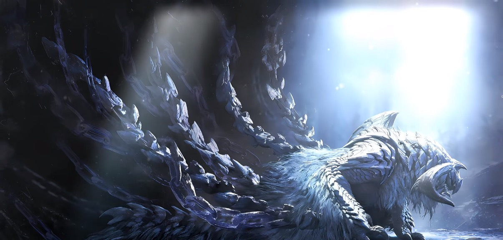

Writing / Tech / Life
狩猎笔记
这里是小狗蛋你的狩猎笔记。每一个问题都是一头需要追踪的猎物：技术如古龙，庞杂而难以近身；阅读如密林，足迹时隐时现； 生活则是一片永远走不到尽头的荒野。先侦察，再靠近。每一篇，都是我在追踪途中留下的标记。
开始狩猎最近在关注
ACG、AI 应用、就业，以及那些值得反复琢磨的小事。
铭记每一次出发前的勇气，也记录每一次学习之后真正留下来的东西。
Latest Posts
最新文章
About
关于我
我是小狗蛋你，山东大学学士，香港大学硕士，研究能源工程领域。
「我曾盗取天火，被缚于高加索山。
也曾独面古龙，在瘴气之谷磨刀。
如今我只是一名刚毕业的能源研究生。
但请相信我，我还在燃烧。」
Newsletter
订阅更新
先留一个订阅入口。未来可以接入邮件服务或 RSS。